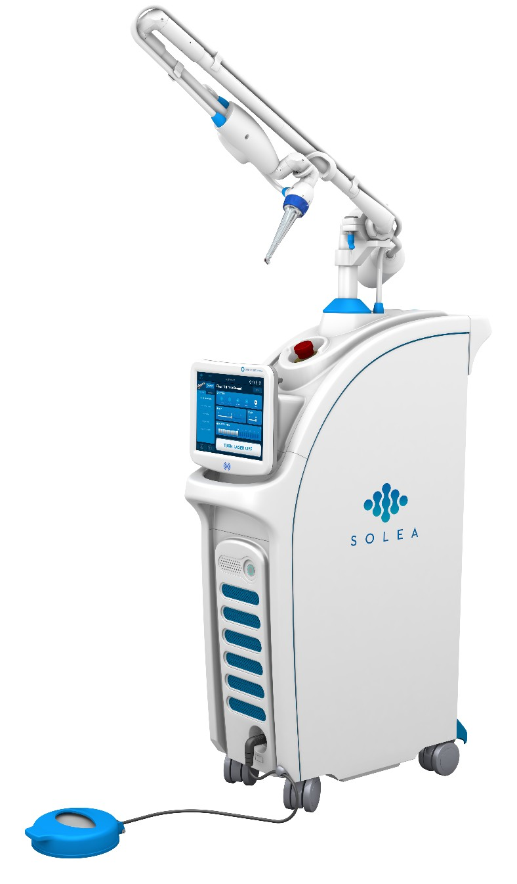
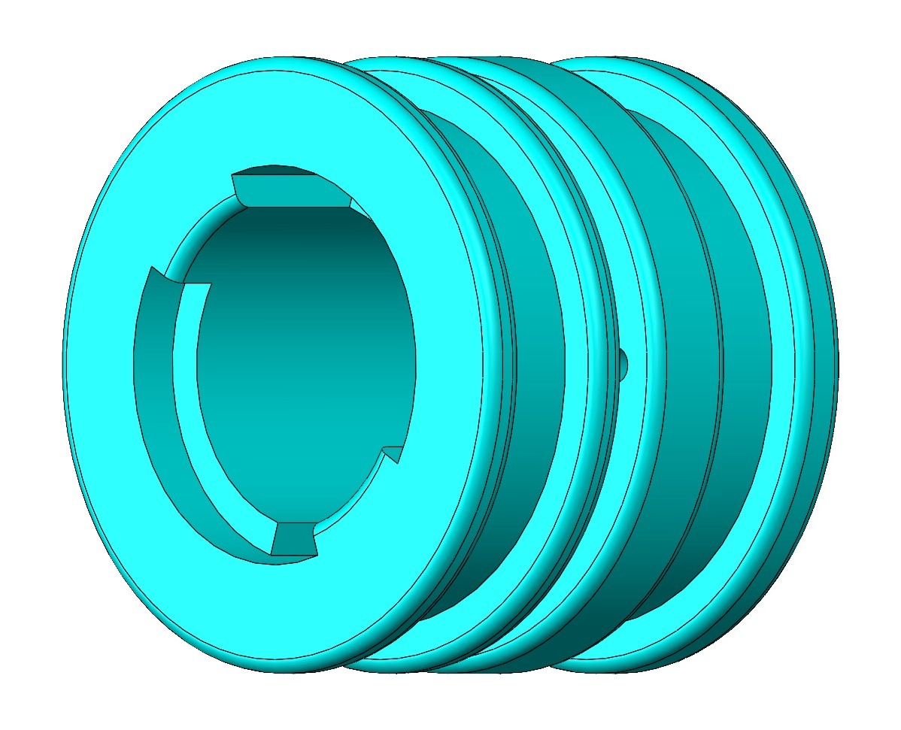
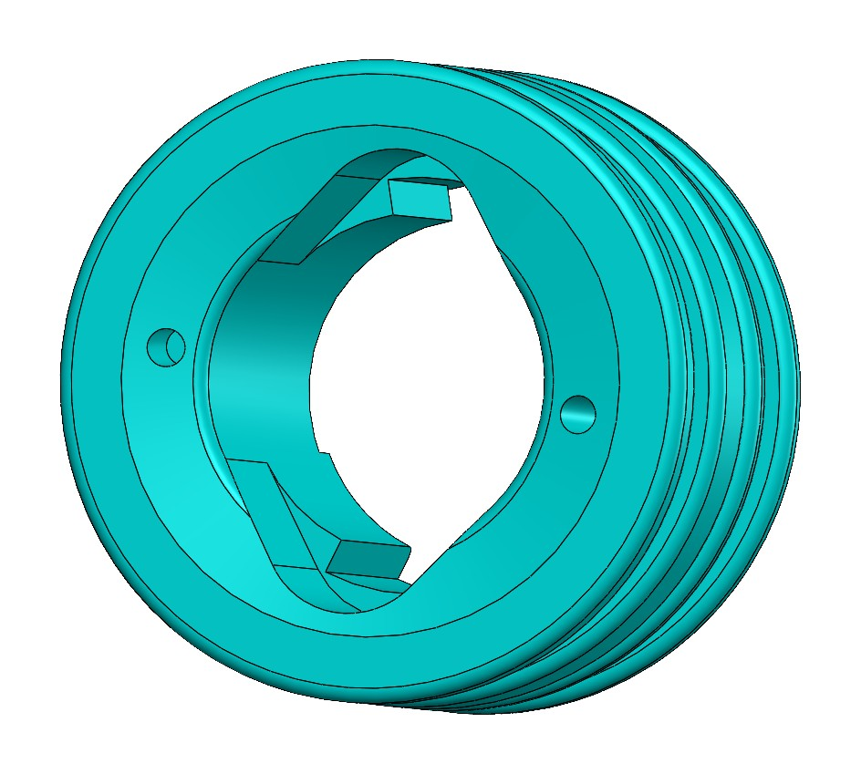
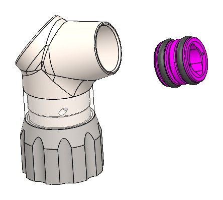

The problem
The mist nozzle on the Contra handpiece is tiny and hard to remove by hand, so replacing it meant a field service visit.


Slide, twist, pull
Slots guide the tool onto the nozzle, lock tabs engage it with a turn, and a pull removes it.


Prototyping
I went from concepts to a down-select, then CAD and 3D-printed prototypes that I refined for fit.


Result
Quick, tool-assisted nozzle swaps and fewer service visits.

